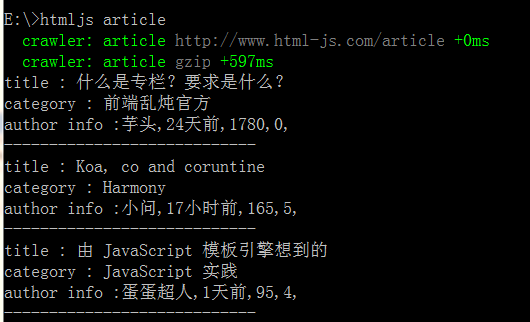
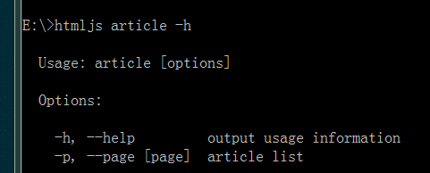

<!DOCTYPE html>
<html>
<head><meta name="generator" content="Hexo 3.8.0">
  <meta charset="utf-8">
  
  <title>用node开发repl应用 | youxiachai</title>
  <meta name="viewport" content="width=device-width, initial-scale=1, maximum-scale=1">
  <meta name="description" content="前言每次看到一些库npm -g install xx然后,执行xx就可以跑起来,这不就是一个shell工具了吗,那么我不就可以不用学习shell语法,直接用js写命令行脚本了吗!">
<meta name="keywords" content="node">
<meta property="og:type" content="article">
<meta property="og:title" content="用node开发repl应用">
<meta property="og:url" content="http://blog.gfdsa.net/2014/01/20/nodejs/usercommander/index.html">
<meta property="og:site_name" content="youxiachai">
<meta property="og:description" content="前言每次看到一些库npm -g install xx然后,执行xx就可以跑起来,这不就是一个shell工具了吗,那么我不就可以不用学习shell语法,直接用js写命令行脚本了吗!">
<meta property="og:locale" content="zh-CN">
<meta property="og:image" content="http://blog.gfdsa.net/2014/01/20/nodejs/usercommander/graph1.png">
<meta property="og:image" content="http://blog.gfdsa.net/2014/01/20/nodejs/usercommander/graph2.png">
<meta property="og:updated_time" content="2019-05-11T17:21:27.366Z">
<meta name="twitter:card" content="summary">
<meta name="twitter:title" content="用node开发repl应用">
<meta name="twitter:description" content="前言每次看到一些库npm -g install xx然后,执行xx就可以跑起来,这不就是一个shell工具了吗,那么我不就可以不用学习shell语法,直接用js写命令行脚本了吗!">
<meta name="twitter:image" content="http://blog.gfdsa.net/2014/01/20/nodejs/usercommander/graph1.png">
  
    <link rel="alternative" href="/atom.xml" title="youxiachai" type="application/atom+xml">
  
  
    <link rel="icon" href="/favicon.png">
  
  <link rel="stylesheet" href="/css/style.css">
  
<!-- Google Analytics -->
<script type="text/javascript">
(function(i,s,o,g,r,a,m){i['GoogleAnalyticsObject']=r;i[r]=i[r]||function(){
(i[r].q=i[r].q||[]).push(arguments)},i[r].l=1*new Date();a=s.createElement(o),
m=s.getElementsByTagName(o)[0];a.async=1;a.src=g;m.parentNode.insertBefore(a,m)
})(window,document,'script','//www.google-analytics.com/analytics.js','ga');

ga('create', 'UA-31013178-1', 'auto');
ga('send', 'pageview');

</script>
<!-- End Google Analytics -->


   
<script>
var _hmt = _hmt || [];
(function() {
  var hm = document.createElement("script");
  hm.src = "//hm.baidu.com/hm.js?75f5de70aa60d9d2b194636cd8b7b621";
  var s = document.getElementsByTagName("script")[0]; 
  s.parentNode.insertBefore(hm, s);
})();
</script>

  <script src="http://libs.baidu.com/jquery/1.9.0/jquery.js"></script>
</head></html>
<body>
  <div id="container">
    <div class="left-col">
    <div class="overlay"></div>
<div class="intrude-less">
	<header id="header" class="inner">
		<div class="profilepic">
			
		</div>

		<hgroup>
		  <h1 class="header-author"><a href="/">youxiachai</a></h1>
		</hgroup>

		
		<p class="header-subtitle">一个在IT业界打杂的程序猿</p>
		

		
			<div class="switch-btn">
				<div class="icon">
					<div class="icon-ctn">
						<div class="icon-wrap icon-house" data-idx="0">
							<div class="birdhouse"></div>
							<div class="birdhouse_holes"></div>
						</div>
						<div class="icon-wrap icon-ribbon hide" data-idx="1">
							<div class="ribbon"></div>
						</div>
						
						
						<div class="icon-wrap icon-me hide" data-idx="3">
							<div class="user"></div>
							<div class="shoulder"></div>
						</div>
						
					</div>
					
				</div>
				<div class="tips-box hide">
					<div class="tips-arrow"></div>
					<ul class="tips-inner">
						<li>菜单</li>
						<li>标签</li>
						
						
						<li>关于我</li>
						
					</ul>
				</div>
			</div>
		

		<div class="switch-area">
			<div class="switch-wrap">
				<section class="switch-part switch-part1">
					<nav class="header-menu">
						<ul>
						
							<li><a href="/">主页</a></li>
				        
							<li><a href="/archives">所有文章</a></li>
				        
						</ul>
					</nav>
					<nav class="header-nav">
						<div class="social">
							
								<a class="github" target="_blank" href="https://github.com/youxiachai" title="github">github</a>
					        
								<a class="weibo" target="_blank" href="http://weibo.com/youxiachai/" title="weibo">weibo</a>
					        
								<a class="facebook" target="_blank" href="https://www.facebook.com/youxilua" title="facebook">facebook</a>
					        
								<a class="google" target="_blank" href="https://plus.google.com/u/0/+%E4%B8%8E%E9%82%BB%E5%BA%84/about/op/svuwn" title="google">google</a>
					        
								<a class="twitter" target="_blank" href="https://twitter.com/Tom_achai" title="twitter">twitter</a>
					        
						</div>
					</nav>
				</section>
				
				
				<section class="switch-part switch-part2">
					<div class="widget tagcloud">
						<a href="/tags/MQTT/" style="font-size: 10px;">MQTT</a> <a href="/tags/android/" style="font-size: 18.57px;">android</a> <a href="/tags/angular/" style="font-size: 10px;">angular</a> <a href="/tags/appframework/" style="font-size: 10px;">appframework</a> <a href="/tags/docker/" style="font-size: 10px;">docker</a> <a href="/tags/game/" style="font-size: 11.43px;">game</a> <a href="/tags/hexo/" style="font-size: 11.43px;">hexo</a> <a href="/tags/html5/" style="font-size: 11.43px;">html5</a> <a href="/tags/http/" style="font-size: 10px;">http</a> <a href="/tags/iOS/" style="font-size: 12.86px;">iOS</a> <a href="/tags/java/" style="font-size: 10px;">java</a> <a href="/tags/kindle/" style="font-size: 10px;">kindle</a> <a href="/tags/life/" style="font-size: 11.43px;">life</a> <a href="/tags/mac/" style="font-size: 10px;">mac</a> <a href="/tags/math/" style="font-size: 10px;">math</a> <a href="/tags/node/" style="font-size: 20px;">node</a> <a href="/tags/nodejs/" style="font-size: 10px;">nodejs</a> <a href="/tags/phonegap/" style="font-size: 10px;">phonegap</a> <a href="/tags/pi/" style="font-size: 10px;">pi</a> <a href="/tags/pomelo/" style="font-size: 15.71px;">pomelo</a> <a href="/tags/sequelize/" style="font-size: 10px;">sequelize</a> <a href="/tags/summary/" style="font-size: 14.29px;">summary</a> <a href="/tags/unity3d/" style="font-size: 12.86px;">unity3d</a> <a href="/tags/weekly/" style="font-size: 17.14px;">weekly</a> <a href="/tags/社科人文/" style="font-size: 10px;">社科人文</a>
					</div>
				</section>
				
				
				

				
				
				<section class="switch-part switch-part3">
				
					我是谁，我从哪里来，我到哪里去？我就是我，是颜色不一样的吃货…
				</section>
				
			</div>
		</div>
	</header>				
</div>
    </div>
    <div class="mid-col">
      <nav id="mobile-nav">
  	<div class="overlay"></div>
	<div class="intrude-less">
		<header id="header" class="inner">
			<div class="profilepic">
				
			</div>

			<hgroup>
			  <h1 class="header-author"><a href="/">youxiachai</a></h1>
			</hgroup>
			
			<p class="header-subtitle">一个在IT业界打杂的程序猿</p>
			
			<nav class="header-menu">
				<ul>
				
					<li><a href="/">主页</a></li>
		        
					<li><a href="/archives">所有文章</a></li>
		        
		        <div class="clearfix"></div>
				</ul>
			</nav>
			<nav class="header-nav">
				<div class="social">
					
						<a class="github" target="_blank" href="https://github.com/youxiachai" title="github">github</a>
			        
						<a class="weibo" target="_blank" href="http://weibo.com/youxiachai/" title="weibo">weibo</a>
			        
						<a class="facebook" target="_blank" href="https://www.facebook.com/youxilua" title="facebook">facebook</a>
			        
						<a class="google" target="_blank" href="https://plus.google.com/u/0/+%E4%B8%8E%E9%82%BB%E5%BA%84/about/op/svuwn" title="google">google</a>
			        
						<a class="twitter" target="_blank" href="https://twitter.com/Tom_achai" title="twitter">twitter</a>
			        
				</div>
			</nav>
		</header>				
	</div>
</nav>
      <article id="post-nodejs/usercommander" class="article article-type-post" itemscope itemprop="blogPost">
  
    <div class="article-meta">
      <a href="/2014/01/20/nodejs/usercommander/" class="article-date">
  	<time datetime="2014-01-19T16:00:00.000Z" itemprop="datePublished">1月 20 2014</time>
</a>
      
      
  <ul class="article-tag-list"><li class="article-tag-list-item"><a class="article-tag-list-link" href="/tags/node/">node</a></li></ul>

    </div>
  
  <div class="article-inner">
    
      <input type="hidden" class="isFancy">
    
    
      <header class="article-header">
        
  
    <h1 class="article-title" itemprop="name">
      用node开发repl应用
    </h1>
  

      </header>
    
    <div class="article-entry" itemprop="articleBody">
      
        <h2 id="前言"><a href="#前言" class="headerlink" title="前言"></a>前言</h2><p>每次看到一些库<code>npm -g install xx</code>然后,执行<code>xx</code>就可以跑起来,这不就是一个shell工具了吗,那么我不就可以不用学习shell语法,直接用js写命令行脚本了吗!</p>
<a id="more"></a>
<h2 id="什么是REPL应用"><a href="#什么是REPL应用" class="headerlink" title="什么是REPL应用"></a>什么是REPL应用</h2><p>所谓的repl应用就是一个终端命令行工具,如果使用linux对于命令行工具例如curl,awk,grep,find,这些肯定不陌生,而现在,我们就是用node去写类似这样的程序</p>
<h2 id="读取-求值-输出"><a href="#读取-求值-输出" class="headerlink" title="读取-求值-输出"></a>读取-求值-输出</h2><p>对于第一次动手写repl应用,我们首先,了解一些知识点.</p>
<h3 id="Process-api"><a href="#Process-api" class="headerlink" title="Process api"></a>Process api</h3><blockquote>
<p>文档 <a href="http://nodejs.org/api/process.html" target="_blank" rel="noopener">http://nodejs.org/api/process.html</a></p>
</blockquote>
<p>process 对象在node里面是全局对象,不需要用require引入,直接使用</p>
<blockquote>
<p>console.log(process)</p>
</blockquote>
<p>我们就可以在终端里面看到process都有些什么内容了.对于,开发一个repl应用,我们对于process对象只需要了解以下下几点就行</p>
<ul>
<li>process.argv //这次输入值集合</li>
<li>process.stdout.* //终端输出方法</li>
<li>process.stdin.* //终端输入方法</li>
<li>process.exit(); // 退出</li>
</ul>
<p>对于process的了解这几点大部分repl应用都可以开发了,接下来,我们说说,如何让命令行工具读取参数.</p>
<h3 id="读取"><a href="#读取" class="headerlink" title="读取"></a>读取</h3><p>对于repl而言,值读取的常见的一般有两种:</p>
<h4 id="配置值"><a href="#配置值" class="headerlink" title="配置值"></a>配置值</h4><figure class="highlight js"><table><tr><td class="gutter"><pre><span class="line">1</span><br><span class="line">2</span><br><span class="line">3</span><br><span class="line">4</span><br><span class="line">5</span><br><span class="line">6</span><br><span class="line">7</span><br><span class="line">8</span><br><span class="line">9</span><br><span class="line">10</span><br></pre></td><td class="code"><pre><span class="line"><span class="meta">#!/usr/bin/env node</span></span><br><span class="line"><span class="keyword">if</span>(process.argv[<span class="number">2</span>] === <span class="string">'-w'</span>)&#123;</span><br><span class="line">    <span class="keyword">var</span> args = process.argv.slice(<span class="number">3</span>);</span><br><span class="line">    <span class="keyword">var</span> output = <span class="string">''</span>;</span><br><span class="line">    args.forEach(<span class="function"><span class="keyword">function</span> (<span class="params">item</span>)</span>&#123;</span><br><span class="line">        output += item + <span class="string">' '</span>;</span><br><span class="line">    &#125;)</span><br><span class="line">    <span class="built_in">console</span>.log(output);</span><br><span class="line">    process.exit();</span><br><span class="line">&#125;</span><br></pre></td></tr></table></figure>
<blockquote>
<p>node repl.js -w Hello world!</p>
</blockquote>
<blockquote>
<p>Hello world!</p>
</blockquote>
<h4 id="交互式"><a href="#交互式" class="headerlink" title="交互式"></a>交互式</h4><figure class="highlight js"><table><tr><td class="gutter"><pre><span class="line">1</span><br><span class="line">2</span><br><span class="line">3</span><br><span class="line">4</span><br><span class="line">5</span><br><span class="line">6</span><br><span class="line">7</span><br><span class="line">8</span><br><span class="line">9</span><br><span class="line">10</span><br><span class="line">11</span><br><span class="line">12</span><br></pre></td><td class="code"><pre><span class="line"><span class="meta">#!/usr/bin/env node</span></span><br><span class="line"><span class="function"><span class="keyword">function</span> <span class="title">read</span>(<span class="params">prompt</span>) </span>&#123;</span><br><span class="line">    process.stdout.write(prompt + <span class="string">':'</span>);</span><br><span class="line">    process.stdin.resume();</span><br><span class="line">    process.stdin.setEncoding(<span class="string">'utf-8'</span>);</span><br><span class="line">    process.stdin.on(<span class="string">'data'</span>, <span class="function"><span class="keyword">function</span>(<span class="params">chunk</span>) </span>&#123;</span><br><span class="line">      process.stdout.write(<span class="string">'output: '</span> + chunk);</span><br><span class="line">      process.exit();</span><br><span class="line">    &#125;);</span><br><span class="line">&#125;</span><br><span class="line"></span><br><span class="line">read(<span class="string">'input'</span>)</span><br></pre></td></tr></table></figure>
<blockquote>
<p>node repl.js</p>
</blockquote>
<blockquote>
<p>input: Hello world!</p>
</blockquote>
<blockquote>
<p>output: Hello world!</p>
</blockquote>
<p>repl 应用本质其实就是一个shell脚本,现在我们要用node来写,所以,对于*nix环境我们必须在第一行说明我们的文件需要在什么环境下运行.</p>
<blockquote>
<p><code>#!/usr/bin/env node</code></p>
</blockquote>
<h4 id="process-argv"><a href="#process-argv" class="headerlink" title="process.argv"></a>process.argv</h4><p>我们主要从命令行输入值都是从<code>process.argv</code>里面读取,这个对象,保存了我们所有命令行的输入,我们可以打印出来看看</p>
<blockquote>
<p>console.log(`process.argv)<br><figure class="highlight plain"><table><tr><td class="gutter"><pre><span class="line">1</span><br><span class="line">2</span><br><span class="line">3</span><br><span class="line">4</span><br></pre></td><td class="code"><pre><span class="line">[ &apos;node&apos;,</span><br><span class="line">  &apos;E:\\ProjectGitHub\\node.js\\repl.js&apos;,</span><br><span class="line">  &apos;-w&apos;,</span><br><span class="line">  &apos;Helloworld!&apos; ]</span><br></pre></td></tr></table></figure></p>
</blockquote>
<p>从这个输出我们就可以很明了的知道我们为什么要用<code>process.argv.slice(3);</code>来获取值了.</p>
<h4 id="process-stdout-amp-amp-process-stdin"><a href="#process-stdout-amp-amp-process-stdin" class="headerlink" title="process.stdout &amp;&amp; process.stdin"></a>process.stdout &amp;&amp; process.stdin</h4><p>这两个方法用于对终端输出和输入的操作,上面的例子应该很好演示这个使用了,这里就不再赘述了.</p>
<h3 id="求值-amp-输出"><a href="#求值-amp-输出" class="headerlink" title="求值 &amp; 输出"></a>求值 &amp; 输出</h3><h4 id="实战演练"><a href="#实战演练" class="headerlink" title="实战演练"></a>实战演练</h4><p>现在要讲的这个repl应用就是简单的在终端中显示前端乱炖的专栏列表.效果如下(PS:绿色那些是debug输出,你自动忽略吧…):</p>
<blockquote>
<p>输入 <code>htmljs article</code></p>
</blockquote>
<blockquote>
<p>输入 <code>htmljs article -p 1</code></p>
</blockquote>
<p></p>
<h4 id="内容准备"><a href="#内容准备" class="headerlink" title="内容准备"></a>内容准备</h4><p>这里用到了<code>request</code>,<code>cheerio</code> 对前端乱炖页面进行解析,这块的讨论已经超出了本文的讨论范围,以后放在介绍<code>cheerio</code>的时候再说这块的实现.</p>
<p>用命令行看前端乱炖专栏列表:</p>
<blockquote>
<p><a href="https://github.com/youxiachai/html-js-cli" target="_blank" rel="noopener">https://github.com/youxiachai/html-js-cli</a></p>
</blockquote>
<h4 id="利用Commander处理输入"><a href="#利用Commander处理输入" class="headerlink" title="利用Commander处理输入"></a>利用Commander处理输入</h4><p>对于如何在终端输入参数,在上面的读取篇已经全部介绍完毕,用原生<code>process</code>处理输入异常的繁琐,对于这点,TJ大神写了一个模块<code>commander</code>用来处理.</p>
<figure class="highlight js"><table><tr><td class="gutter"><pre><span class="line">1</span><br><span class="line">2</span><br><span class="line">3</span><br><span class="line">4</span><br><span class="line">5</span><br><span class="line">6</span><br><span class="line">7</span><br><span class="line">8</span><br><span class="line">9</span><br><span class="line">10</span><br><span class="line">11</span><br><span class="line">12</span><br><span class="line">13</span><br><span class="line">14</span><br><span class="line">15</span><br><span class="line">16</span><br><span class="line">17</span><br><span class="line">18</span><br><span class="line">19</span><br></pre></td><td class="code"><pre><span class="line"><span class="meta">#!/usr/bin/env node</span></span><br><span class="line"></span><br><span class="line"><span class="keyword">var</span> program = <span class="built_in">require</span>(<span class="string">'commander'</span>),</span><br><span class="line">    htmljscli = <span class="built_in">require</span>(<span class="string">'../index'</span>),</span><br><span class="line">    libInfo = <span class="built_in">require</span>(<span class="string">'../package'</span>);</span><br><span class="line"></span><br><span class="line">program</span><br><span class="line">    .version(libInfo.version)</span><br><span class="line"></span><br><span class="line">program</span><br><span class="line">    .command(<span class="string">'article'</span>)</span><br><span class="line">    .description(<span class="string">'show article list'</span>)</span><br><span class="line">    .option(<span class="string">'-p, --page [page]'</span>, <span class="string">'article list'</span>)</span><br><span class="line">    .action(<span class="function"><span class="keyword">function</span>(<span class="params">options</span>)</span>&#123;</span><br><span class="line">        htmljscli.listArticle(options.page)</span><br><span class="line">    &#125;);</span><br><span class="line"></span><br><span class="line"></span><br><span class="line">program.parse(process.argv); <span class="comment">// 这行必须是结尾</span></span><br></pre></td></tr></table></figure>
<p>不到20行代码就可以解决了原本需要各种处理<code>process.argv</code> 情况,而且还很贴心了帮我们自动生成help介绍</p>
<blockquote>
<p>htmljs article -h</p>
</blockquote>
<blockquote>
<p></p>
</blockquote>
<p>使用<code>commander</code> 我们只需要了解一下几点就可以了</p>
<ul>
<li>commander.option()</li>
</ul>
<blockquote>
<p>用于将对象值对象化, 例如上文定义的<code>commander .option(&#39;-p, --page [page]&#39;, &#39;article list&#39;)</code>我们输入的时候<code>-p</code> 的时候,就可以用<code>options.page</code> 获取我们的参数</p>
</blockquote>
<ul>
<li>commander.command().option().action()</li>
</ul>
<blockquote>
<p>用于配置子命令</p>
</blockquote>
<h2 id="发布"><a href="#发布" class="headerlink" title="发布"></a>发布</h2><p>有时候,一些库会要求我们</p>
<blockquote>
<p>npm -g install cnpm</p>
</blockquote>
<p>然后很神奇的发现可以</p>
<blockquote>
<p>cnpm install xx</p>
</blockquote>
<p>这类的操作,那我们发布的包怎么实现这个神奇的魔法呢.原理非常简单,我们只需要在我们的<code>package.json</code>加入以下几句就行</p>
<figure class="highlight js"><table><tr><td class="gutter"><pre><span class="line">1</span><br><span class="line">2</span><br><span class="line">3</span><br><span class="line">4</span><br><span class="line">5</span><br></pre></td><td class="code"><pre><span class="line">&#123;</span><br><span class="line">  <span class="string">"bin"</span>: &#123;</span><br><span class="line">    <span class="string">"htmljs"</span>: <span class="string">"./bin/htmljscli"</span></span><br><span class="line">  &#125;</span><br><span class="line">&#125;</span><br></pre></td></tr></table></figure>
<p>用<code>npm</code> 安装的时候就会自动与当前系统环境进行绑定.</p>
<p>接下来我们只需要</p>
<blockquote>
<p>npm -g install html-js-cli</p>
</blockquote>
<p>运行</p>
<blockquote>
<p>htmljs article</p>
</blockquote>
<p>就可以在终端看到专栏列表了</p>
<p>值得注意的时候,在<code>windows</code>发布你写node repl应用,<code>*nix</code>用户安装的时候,命令并不会起作用,所以,要用<code>npm</code>发布repl应用的时候请使用<code>*nix</code>系统</p>
<h2 id="Node-repl-应用"><a href="#Node-repl-应用" class="headerlink" title="Node repl 应用"></a>Node repl 应用</h2><h3 id="豆瓣电台命令行版"><a href="#豆瓣电台命令行版" class="headerlink" title="豆瓣电台命令行版"></a>豆瓣电台命令行版</h3><blockquote>
<p><a href="https://github.com/turingou/douban.fm" target="_blank" rel="noopener">https://github.com/turingou/douban.fm</a></p>
</blockquote>
<p>###微博命令行工具</p>
<blockquote>
<p><a href="http://justan.github.io/twei" target="_blank" rel="noopener">http://justan.github.io/twei/</a></p>
</blockquote>
<p>###cnpmjs</p>
<blockquote>
<p><a href="https://github.com/cnpm/cnpm" target="_blank" rel="noopener">https://github.com/cnpm/cnpm</a></p>
</blockquote>

      
    </div>
  </div>
  
    
<nav id="article-nav">
  
    <a href="/2014/02/08/game/startcocos2d/" id="article-nav-newer" class="article-nav-link-wrap">
      <strong class="article-nav-caption">&lt;</strong>
      <div class="article-nav-title">
        
          Let&#39;s start Cocos2d-html5 1 : Hello World!
        
      </div>
    </a>
  
  
    <a href="/2013/12/31/summary/final2013/" id="article-nav-older" class="article-nav-link-wrap">
      <div class="article-nav-title">2013年终总结</div>
      <strong class="article-nav-caption">&gt;</strong>
    </a>
  
</nav>

  
</article>


<div class="share">
	<!-- JiaThis Button BEGIN -->
	<div class="jiathis_style">
		<span class="jiathis_txt">分享到：</span>
		<a class="jiathis_button_tsina"></a>
		<a class="jiathis_button_cqq"></a>
		<a class="jiathis_button_douban"></a>
		<a class="jiathis_button_weixin"></a>
		<a class="jiathis_button_tumblr"></a>
		<a href="http://www.jiathis.com/share" class="jiathis jiathis_txt jtico jtico_jiathis" target="_blank"></a>
	</div>
	<script type="text/javascript" src="http://v3.jiathis.com/code/jia.js?uid=1567310" charset="utf-8"></script>
	<!-- JiaThis Button END -->
</div>


<div class="duoshuo">
	<!-- 多说评论框 start -->
	<div class="ds-thread" data-thread-key="nodejs/usercommander" data-title="用node开发repl应用" data-url="http://blog.gfdsa.net/2014/01/20/nodejs/usercommander/"></div>
	<!-- 多说评论框 end -->
	<!-- 多说公共JS代码 start (一个网页只需插入一次) -->
	<script type="text/javascript">
	var duoshuoQuery = {short_name:"youxiachai"};
	(function() {
		var ds = document.createElement('script');
		ds.type = 'text/javascript';ds.async = true;
		ds.src = (document.location.protocol == 'https:' ? 'https:' : 'http:') + '//static.duoshuo.com/embed.js';
		ds.charset = 'UTF-8';
		(document.getElementsByTagName('head')[0] 
		 || document.getElementsByTagName('body')[0]).appendChild(ds);
	})();
	</script>
	<!-- 多说公共JS代码 end -->
</div>


      <footer id="footer">
  <div class="outer">
    <div id="footer-info">
    	<div class="footer-left">
    		&copy; 2019 youxiachai
    	</div>
      	<div class="footer-right">
      		<a href="http://hexo.io/" target="_blank">Hexo</a>  Theme <a href="https://github.com/litten/hexo-theme-yilia" target="_blank">Yilia</a> by Litten
      	</div>
    </div>
  </div>
</footer>
    </div>
    
  <link rel="stylesheet" href="/fancybox/jquery.fancybox.css">
  <script src="/fancybox/jquery.fancybox.pack.js"></script>
  <script src="/js/main.js"></script>

  </div>
</body>
</html>